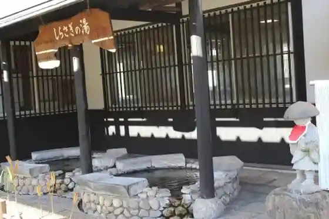
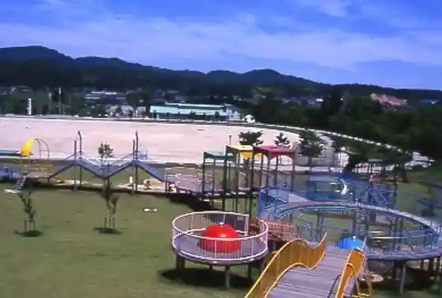
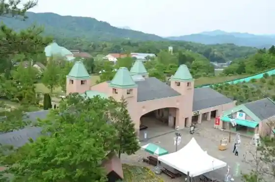
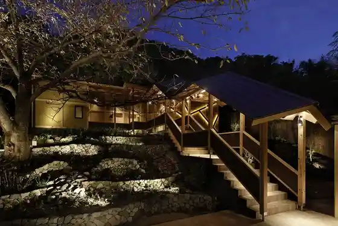

Tango Onsen Hashiudo So
Kyotango, Kyoto · 0772-75-2212 · Official / source link
Kizu Onsen
Kyotango, Kyoto · 0772-72-0900 · Official / source link

Mineyama Tochugaoka Park (Kyotango Hagoromo Rikujokyogijo)
Kyotango, Kyoto · 0772-62-7470 · Official / source link

Roadside Station Tango Okoku (Shoku no Miyako)
Kyotango, Kyoto · 0772-66-3081 · Official / source link

Hashihito Onsen Sumi Taira
Kyotango, Kyoto · 0772-75-0005 · Official / source link

Kotobiki Hama Kakari Tsu Furiisaito Campground
Kyotango, Kyoto · 0772-72-0900 · Official / source link
Kamiya Shrine (Kamiya Tachi Miya)
Kyotango, Kyoto · Official / source link
Iyasaka Ashiginu Onsen
Kyotango, Kyoto · 0772-65-2000 · Official / source link
Roadside Station Tenkitenki Tango
Kyotango, Kyoto · 0772-75-2525 · Official / source link
Umibe no Onsen Shoku Tabi Ichibo Kan
Kyotango, Kyoto · 0772-74-0190 · Official / source link
Kyotango Mineyama General Park
Kyotango, Kyoto · 0772-62-3656 · Official / source link
Shima Ji Shrine
Kyotango, Kyoto · 0772-72-0900 · Official / source link
Tateiwa
Kyotango, Kyoto · 0772-75-1500 · Official / source link
Kotobiki Hama
Kyotango, Kyoto · 0772-72-6070 · Official / source link
Jiki Wo Irodoru Yado Kasho En
Kyotango, Kyoto · 0772-74-9009 · Official / source link
Kyotango Kanko Kosha Kumihama Town Shibu
Kyotango, Kyoto · 0772-82-1781 · Official / source link
Kotohira Shrine
Kyotango, Kyoto · 0772-62-0225 · Official / source link
Koeki Zaidanhojin Tango Chiiki Jibasangyo Shinko Center (Amitei Tango)
Kyotango, Kyoto · 0772-72-5261 · Official / source link
Keigamisaki
Kyotango, Kyoto · 0772-75-1500 · Official / source link
Gosho Inaba Honke
Kyotango, Kyoto · 0772-82-2356 · Official / source link
Kyotango Omiya Shizen Sports Park
Kyotango, Kyoto · 0772-69-0662 · Official / source link
Roadside Station Kumihama SANKAIKAN
Kyotango, Kyoto · 0772-83-2000 · Official / source link
Kyotango Kanko Kosha
Kyotango, Kyoto · 0772-72-6070 · Official / source link
Tori Matsu
Kyotango, Kyoto · 0772-72-0429 · Official / source link
Nakahama Furiisaito Oto Campground
Kyotango, Kyoto · 090-3655-1657 · Official / source link
Tango Han Shima Matsushima Onsen Ukawa Onsen Yoshi no Village
Kyotango, Kyoto · 0772-76-1000 · Official / source link
Kabuto Yama Tembo Tokoro
Kyotango, Kyoto · 0772-82-1781 · Official / source link
Kumihama Onsen Yumoto Kan
Kyotango, Kyoto · 0772-83-1071 · Official / source link
Kyotango Kanko Kosha Amino Town Shibu
Kyotango, Kyoto · 0772-72-0900 · Official / source link
Obama Beach
Kyotango, Kyoto · 0772-72-0900 · Official / source link
Heki Sui Gyoen
Kyotango, Kyoto · 0772-83-0355 · Official / source link
Yuhigaura Onsen Tabi Tei Kai ‐KAI‐
Kyotango, Kyoto · 0772-74-9099 · Official / source link
Hosomi Workshop
Kyotango, Kyoto · 0772-83-1192 · Official / source link
Kasho En Bettei Fuka
Kyotango, Kyoto · 0772-74-9009 · Official / source link
Sho Tenkyo Beach
Kyotango, Kyoto · 0772-83-0149 · Official / source link
Hosokawa Garasha Fujin Insei Chi no Hi
Kyotango, Kyoto · 0772-72-6070 · Official / source link
Kotobiki Hama Naki Suna Bunka Kan
Kyotango, Kyoto · 0772-72-5511 · Official / source link
Furan no Kan
Kyotango, Kyoto · 0772-83-1033 · Official / source link
Kotobiki Hama Kakari Tsu Beach
Kyotango, Kyoto · 0772-72-0900 · Official / source link
Kotobiki Hama Yu Beach
Kyotango, Kyoto · 0772-72-0900 · Official / source link
Tango Matsushima
Kyotango, Kyoto · 0772-75-1500 · Official / source link
Sei Shrine
Kyotango, Kyoto · 0772-72-0900 · Official / source link
Tateiwa Nochigahama Beach
Kyotango, Kyoto · 0772-75-2525 · Official / source link
Kama I Hama Beach
Kyotango, Kyoto · 0772-83-0149 · Official / source link
TANGO OPEN CENTER
Kyotango, Kyoto · 0772-68-5151 · Official / source link
KISSUIEN Stay&Food
Kyotango, Kyoto · 0772-62-5111 · Official / source link
Yugengaisha Tango Jajii Ranch
Kyotango, Kyoto · 0772-83-1617 · Official / source link
Nyoi Tera
Kyotango, Kyoto · 0772-82-0163 · Official / source link
Hama Tsume Yuhigaura Beach
Kyotango, Kyoto · 0772-72-6070 · Official / source link
Hatcho Hama Beach
Kyotango, Kyoto · 0772-72-0900 · Official / source link
Tateiwa Nochigahama Furiisaito Campground
Kyotango, Kyoto · 0772-75-2525 · Official / source link
Kabuto Sanko Sono Campground
Kyotango, Kyoto · 0772-83-1457 · Official / source link
Byobu Iwa
Kyotango, Kyoto · 0772-75-1500 · Official / source link
Tango Sakyu
Kyotango, Kyoto · 0772-82-1781 · Official / source link
Takeno Beach
Kyotango, Kyoto · 0772-75-1500 · Official / source link
Ikari Kogen Ranch
Kyotango, Kyoto · 0772-76-1121 · Official / source link
Men / Kafeterasu MATSUTARO
Kyotango, Kyoto · 0772-72-0429 · Official / source link
Yoshihara Yamashiro Shi
Kyotango, Kyoto · 0772-69-0640 · Official / source link
Ikari Kogen Sutekihausu
Kyotango, Kyoto · 0772-76-1061 · Official / source link
Takeno Shuzo Yugengaisha
Kyotango, Kyoto · 0772-65-2021 · Official / source link
Kyotango Kanko Kosha Tango Town Shibu
Kyotango, Kyoto · 0772-75-1500 · Official / source link
Honganji
Kyotango, Kyoto · 0772-82-0154 · Official / source link
Seishonen Yama no Ie
Kyotango, Kyoto · 0772-66-0036 · Official / source link
Tenkitenki Village Oto Campground
Kyotango, Kyoto · 0772-75-2525 · Official / source link
Hama Tsume Yuhigaura Onsen
Kyotango, Kyoto · 0772-72-0900 · Official / source link
Hashihito Kogo Shotoku Taishi Boshi Zo
Kyotango, Kyoto · 0772-75-1500 · Official / source link
Tango Hanare Mizumi Onsen
Kyotango, Kyoto · 0772-72-0900 · Official / source link
Kumihama Onsen
Kyotango, Kyoto · 0772-82-1781 · Official / source link
Tango Jukan Rindo
Kyotango, Kyoto · 0772-72-6070 · Official / source link
Akira Koi Kan Yo Kokorozashi no Ya
Kyotango, Kyoto · 0772-75-2284 · Official / source link
Heri Shiro Tera
Kyotango, Kyoto · 0772-62-0957 · Official / source link
Omiya Bai Shrine
Kyotango, Kyoto · 0772-64-2454 · Official / source link
Asamogawa Urashima Onsen
Kyotango, Kyoto · 0772-72-0900 · Official / source link
Tennyo Village
Kyotango, Kyoto · 0772-62-7720 · Official / source link
Kumihama Asa City
Kyotango, Kyoto · 0772-82-1781 · Official / source link
Kuzuno Hama Beach
Kyotango, Kyoto · 0772-83-0149 · Official / source link
Takajin Land Kumihama Oto Campground
Kyotango, Kyoto · 0772-83-1548 · Official / source link
Garasusutajio (Raimu)
Kyotango, Kyoto · 0772-83-1429 · Official / source link
Shirosugi Shuzo
Kyotango, Kyoto · 0772-64-2101 · Official / source link
Yoshioka Shuzo Ba
Kyotango, Kyoto · 0772-65-2020 · Official / source link
Kumano Shuzo Yugengaisha
Kyotango, Kyoto · 0772-82-0019 · Official / source link
Takashima Beach
Kyotango, Kyoto · 090-5887-6715 · Official / source link
Kurobe Choshi Yama Burial Mound
Kyotango, Kyoto · 0772-69-0640 · Official / source link
Hakoishi Hama Beach
Kyotango, Kyoto · 0772-83-0149 · Official / source link
Mo Hitotsu no Kyoto Ujo Soan
Kyotango, Kyoto · 0772-74-9009 · Official / source link
Takashima Furiisaito Oto Campground
Kyotango, Kyoto · 090-5887-6715 · Official / source link
Sho Tenkyo Onsen (Kirara Baths)
Kyotango, Kyoto · 0772-82-1781 · Official / source link
Ono Sho Town Onsen
Kyotango, Kyoto · 0772-68-1122 · Official / source link
Sho Town Park (Sho Town no Sha (Yakata))
Kyotango, Kyoto · 0772-64-5533 · Official / source link
Kyotango Forest Park Suisu Village
Kyotango, Kyoto · 0772-66-0036 · Official / source link
Nakahama Beach
Kyotango, Kyoto · 090-3655-1657 · Official / source link
Hana Sato OKADA
Kyotango, Kyoto · 0772-74-5005 · Official / source link
Tango Asa City
Kyotango, Kyoto · 0772-72-5261 · Official / source link
Tango Mineyama Onsen
Kyotango, Kyoto · 0772-62-5771 · Official / source link
Noma Kawa
Kyotango, Kyoto · 0772-66-0002 · Official / source link
Hama Tsume Yuhigaura Campground
Kyotango, Kyoto · 0772-72-0900 · Official / source link
Omiya Fureai Workshop
Kyotango, Kyoto · 0772-64-5558 · Official / source link
Kinoshita Shuzo Yugengaisha
Kyotango, Kyoto · 0772-82-0071 · Official / source link
Kyotango Kumihama Chuo Sports Park
Kyotango, Kyoto · 0772-69-0666 · Official / source link
Suna Ho Beach
Kyotango, Kyoto · 0772-75-1500 · Official / source link
Hama Tsume Onsen
Kyotango, Kyoto · 0772-72-0900 · Official / source link
Hashihito Onsen Sato Ko no Tsuru Onsen
Kyotango, Kyoto · 0772-75-1500 · Official / source link
Ueno Onsen
Kyotango, Kyoto · 0772-74-1306 · Official / source link
Kumano Shrine
Kyotango, Kyoto · 0772-82-1781 · Official / source link
Suna Ho Furiisaito Campground
Kyotango, Kyoto · 0772-75-1500 · Official / source link
Uchiyama Buna Hayashi
Kyotango, Kyoto · 0772-69-0712 · Official / source link
Kyotango Ritsu Local History Museum
Kyotango, Kyoto · 0772-72-4600 · Official / source link
Myo Sei Tera
Kyotango, Kyoto · 0772-68-1022 · Official / source link
Otani Kofun Park (Jo no Oka)
Kyotango, Kyoto · 0772-69-0640 · Official / source link
Tango Chirimen Hassho Kinenhi
Kyotango, Kyoto · 0772-69-0450 · Official / source link
Uddei Isanago (Kyotango Mineyama Ringyo Sogo Center)
Kyotango, Kyoto · 0772-62-5670 · Official / source link
Sode Kokorozashi no Tanada
Kyotango, Kyoto · 0772-75-1500 · Official / source link
Hatcho Hama Obama Onsen
Kyotango, Kyoto · 0772-72-0900 · Official / source link
Sancho Hotel Kaze no Gakko Kyoto
Kyotango, Kyoto · 0772-66-0036 · Official / source link
Kyu So Beach
Kyotango, Kyoto · 070-4326-6218 · Official / source link
Tango Kodai no Sato Museum
Kyotango, Kyoto · 0772-75-2431 · Official / source link
Tango Kanno Onsen
Kyotango, Kyoto · 0772-82-1781 · Official / source link
Yubune Saka 2 Go Fun
Kyotango, Kyoto · 0772-69-0640 · Official / source link
Kumihama Kantsurii Onsen 1 Go
Kyotango, Kyoto · 0772-83-0149 · Official / source link
Onojo Shi
Kyotango, Kyoto · 0772-69-0640 · Official / source link
Iwaya Tera
Kyotango, Kyoto · 0772-64-3946 · Official / source link
Saihoku Shigosen to
Kyotango, Kyoto · 0772-72-0900 · Official / source link
Amino Choshi Yama Burial Mound
Kyotango, Kyoto · 0772-69-0640 · Official / source link
Naki Suna Onsen
Kyotango, Kyoto · 0772-72-0900 · Official / source link
Endon Tera
Kyotango, Kyoto · 0772-84-0478 · Official / source link
Kyotango Onsen
Kyotango, Kyoto · 0772-72-0900 · Official / source link
Kyotango Kanko Kosha Hagoromo Suteshon (Mineyama Town Shibu, Omiya Town Shibu, Iyasaka Town Shibu)
Kyotango, Kyoto · 0772-62-8560 · Official / source link
Heichi Jizo
Kyotango, Kyoto · 0772-69-0640 · Official / source link
Sei no Mori
Kyotango, Kyoto · 0772-72-0900 · Official / source link
Iso Sunayama
Kyotango, Kyoto · 0772-69-0450 · Official / source link